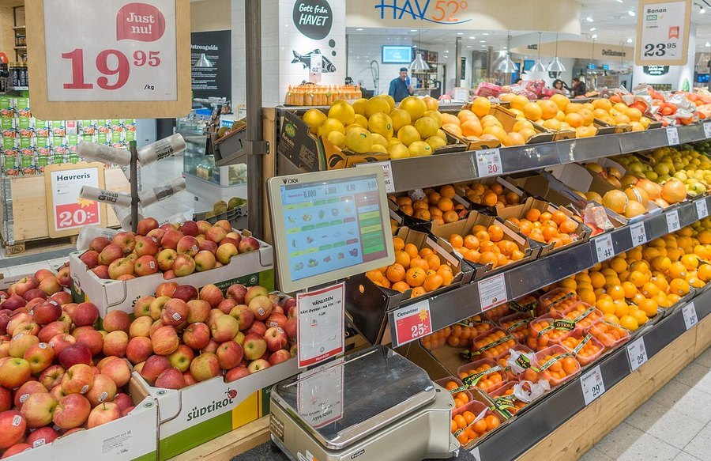

Artificial Sweeteners and Brain Fog: Is There a Real Connection?
Diet soda, zero-sugar flavored water, sugar-free everything. If you've wondered whether all that sweetness without the sugar is doing something to your focus, here's what the research actually shows.

Photo: Frankie Fouganthin / Wikimedia Commons / CC BY-SA 4.0
Key takeaways
- No study has shown that artificial sweeteners directly cause brain fog. The research that exists is mostly observational, and the picture is mixed.
- Some studies link heavy, long-term intake with changes in gut bacteria that are involved in glucose and metabolic signaling, a pathway that's still being worked out.
- A few trials have found a modest insulin response to sweet taste alone, even without real sugar, in some but not all participants.
- Most research groups several sweeteners together (aspartame, sucralose, saccharin), so compound-specific claims outrun the evidence.
- Regular sugar has stronger, more consistent evidence tying it to blood sugar swings and brain fog than artificial sweeteners do.
- Individual variation is large. Gut bacteria, baseline metabolic health and sheer quantity consumed all seem to matter.
Short answer: the link is plausible but not proven. A handful of studies raise real questions about gut bacteria and blood sugar signaling, but nothing has shown that a can of diet soda makes your thinking foggier the way, say, a poor night of sleep reliably does.
What does the actual research say?
Most of the human evidence here is observational: researchers survey what people drink and eat, then look at later health outcomes or cognitive test scores. Some of these studies have found associations between higher artificial-sweetener intake and worse scores on certain cognitive measures, or higher rates of metabolic issues. Observational data like this is useful for spotting patterns, but it can't separate cause from the dozens of other things that tend to travel with high diet-soda consumption, including overall diet quality, body weight and activity level.
The more mechanistic work comes from smaller trials looking at specific pathways. Several studies have found that artificial sweeteners can shift the composition of gut bacteria after sustained use, and some gut bacteria are involved in how the body manages glucose. A few trials have also found that sweet taste itself, even with zero calories attached, can trigger a small insulin release in some people, a response your body seems to have learned by association. None of this adds up to proof that sweeteners cause brain fog. It's a set of plausible pathways that researchers are still mapping.
COMPLEX
The memory formula we rate highest in 2026
One formula combined a fully transparent, clinically-dosed label: citicoline, bacopa, phosphatidylserine and B-vitamins, with a 60-day guarantee.
See Today's Price →Why would a sweetener with no calories affect blood sugar at all?
It sounds backward at first. The leading explanation involves the gut and the tongue working together more closely than most people assume. Sweet-taste receptors exist not just on the tongue but also lining parts of the gut, and some research suggests those receptors can trigger metabolic signals when they detect sweetness, independent of whether actual sugar follows. In effect, the body may partly respond to the taste of sweet, not only the substance.
This effect, where it shows up, tends to be smaller and far less consistent than the blood sugar swing from real sugar. Our deeper look at sugar and brain fog covers that more established mechanism in detail. The two aren't equivalent, and it's worth not conflating a "maybe, sometimes, for some people" effect with a well-documented one.
Does this mean diet soda is just as bad as regular soda?
No, and this is where a lot of headlines overreach. Regular soda's sugar load has a well-established, repeatable effect on blood glucose, and our piece on blood sugar and brain fog walks through exactly how that dip in focus happens. Swapping to a diet version removes that specific, well-documented mechanism. What it may introduce is a smaller, less-certain set of effects tied to gut bacteria and taste-driven insulin response. Smaller and uncertain is not the same as nothing, but it's also not the same as swapping one problem for an equally bad one.
What should you actually do with this information?
If you already drink a lot of diet soda or use sweeteners heavily and notice fogginess, it's reasonable to experiment. Cut back for a couple of weeks and see whether anything changes, while also looking at sleep, hydration and overall diet, which have far stronger evidence behind them as causes of brain fog. Water, plain sparkling water, unsweetened tea and black coffee are the better-supported swaps if you're trying to cut sweetness generally, not a return to regular soda.
If fogginess has been a persistent, daily problem rather than something tied to one habit, it's worth looking at the fuller list of causes. Our guide to brain fog causes and fixes covers the more established culprits, and our broader guide to improving memory is the better starting point if focus and recall are both slipping.
Frequently asked questions
Do artificial sweeteners cause brain fog directly?
No study has shown that directly. What exists are associations between heavy artificial-sweetener intake and markers like altered gut bacteria and glucose response in some people, plus plenty of anecdotal reports of fogginess. The direct causal chain from sweetener to foggy thinking hasn't been established.
Are some artificial sweeteners worse than others?
The research doesn't single out one sweetener as clearly worse for cognition. Most human studies group several together (aspartame, sucralose, saccharin) or focus on diet soda as a category, so brand- or compound-specific claims about memory and focus go further than the evidence currently supports.
Does diet soda affect blood sugar even without real sugar?
Some studies have found that artificial sweeteners can still trigger a modest insulin response in certain people, and may alter gut bacteria involved in glucose handling. The effect appears smaller and more variable between individuals than the effect of actual sugar, and not everyone shows it.
Should I switch from diet soda back to regular soda for my brain?
No. Regular soda's sugar load has stronger, more consistent evidence linking it to blood sugar swings and brain fog than artificial sweeteners do. If fogginess is the concern, water, unsweetened tea or black coffee are the better-supported swaps, not a switch to sugar.
Nutrition is only one lever
What you drink is part of the picture, not the whole thing. See the memory formulas our editors rate highest for 2026 for the nutritional side.
See the Top 5 Memory Formulas →Related: Sugar and brain fog · Blood sugar and brain fog · How to improve your memory · Best memory formulas of 2026